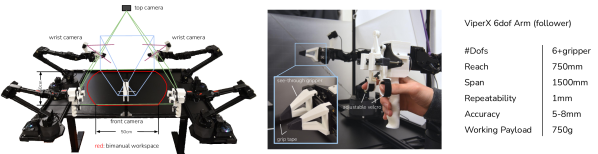
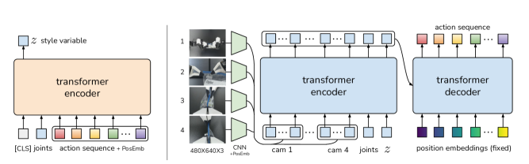
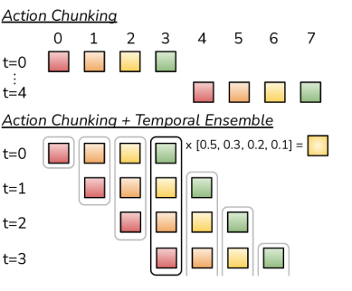
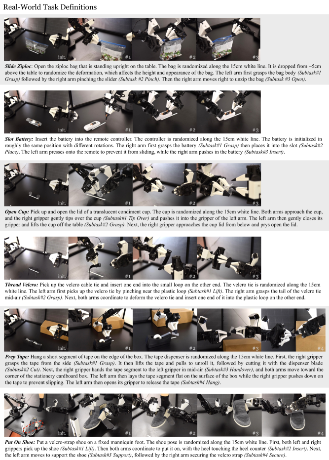
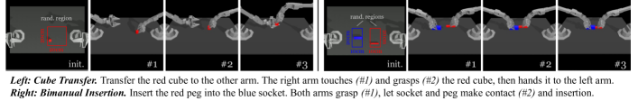
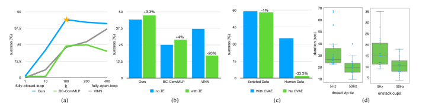
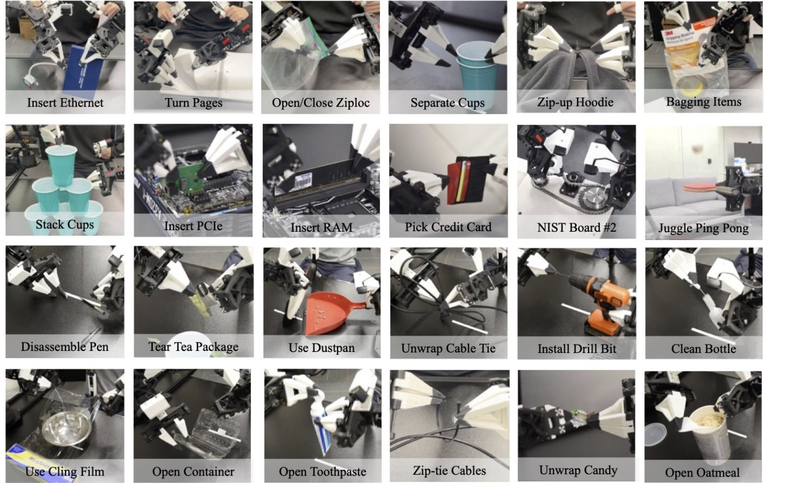
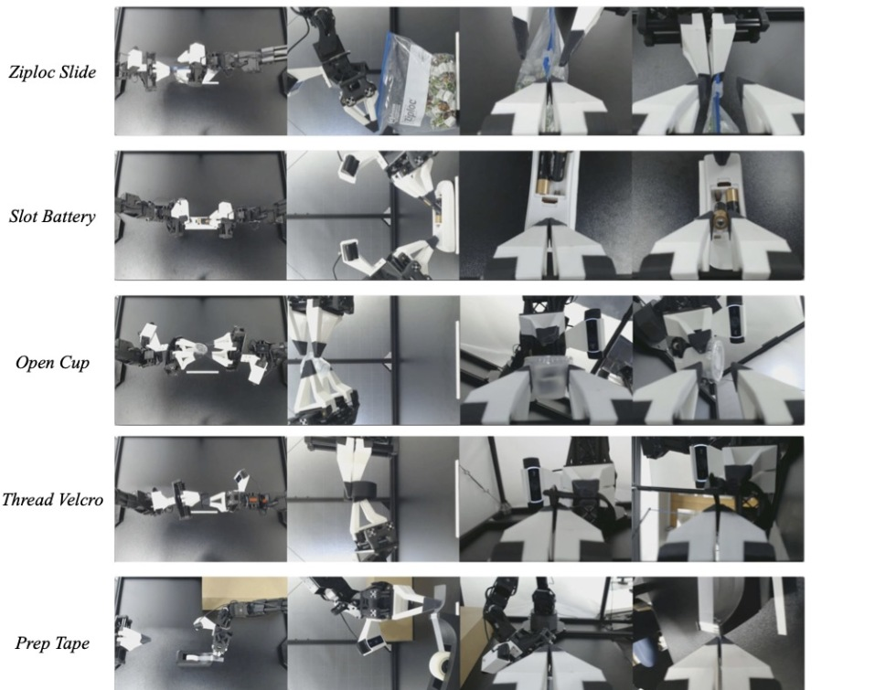
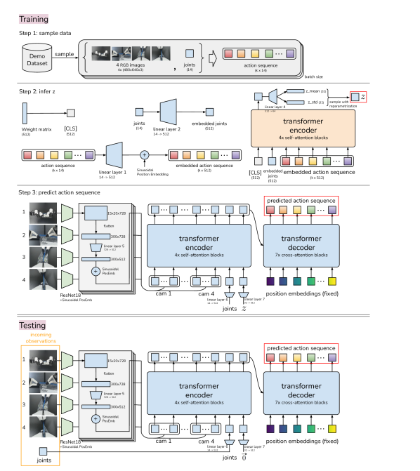
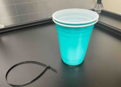

초록
케이블 타이를 묶거나 배터리를 끼우는 것과 같은 정밀 조작 작업은 정밀도, 접촉력의 세심한 조율, 그리고 폐루프(closed-loop) 시각 피드백이 필요하기 때문에 로봇에게 매우 어려운 것으로 잘 알려져 있다. 이러한 작업을 수행하려면 일반적으로 고가의 로봇, 정확한 센서 또는 정밀한 보정이 필요하며, 이는 비용이 많이 들고 설정하기 어려울 수 있다. 학습을 통해 저비용의 정밀하지 않은 하드웨어도 이러한 정밀 조작 작업을 수행할 수 있을까? 본 논문에서는 맞춤형 원격 조작 인터페이스로 수집한 실제 시연 데이터로부터 직접 종단간(end-to-end) 모방 학습을 수행하는 저비용 시스템을 제시한다. 그러나 모방 학습은 특히 고정밀 영역에서 고유한 한계를 지닌다. 즉, 정책(policy)의 오류가 시간이 지남에 따라 누적될 수 있으며, 인간의 시연은 비정상성(non-stationary)을 보일 수 있다. 이러한 문제를 해결하기 위해, 우리는 행동 시퀀스에 대한 생성 모델을 학습하는 단순하면서도 새로운 알고리즘인 Action Chunking with Transformers (ACT)를 개발했다. ACT를 통해 로봇은 단 10분 분량의 시연만으로 반투명 소스 컵 열기, 배터리 끼우기 등 실제 환경의 6가지 까다로운 작업을 80-90%의 성공률로 학습할 수 있다. 프로젝트 웹사이트: tonyzhaozh.github.io/aloha
I 서론
정밀 조작 작업은 정밀한 폐루프 피드백을 수반하며, 환경 변화에 대응하여 조정하고 재계획하기 위해 높은 수준의 손-눈 협응(hand-eye coordination)을 요구한다. 이러한 조작 작업의 예로는 소스 컵의 뚜껑을 열거나 배터리를 끼우는 등이 있으며, 이는 집고 놓는(pick-and-place) 것과 같은 단순한 동작보다는 꼬집기, 들어 올리기, 찢기 등 섬세한 작업을 포함한다. 그림 LABEL:fig:aloha의 소스 컵 뚜껑 열기를 예로 들면, 컵이 테이블 위에 똑바로 세워진 상태에서 시작한다. 오른쪽 그리퍼가 먼저 컵을 쓰러뜨리고 열려 있는 왼쪽 그리퍼 쪽으로 살짝 밀어야 한다. 그런 다음 왼쪽 그리퍼가 부드럽게 닫히며 컵을 테이블에서 들어 올린다. 이어서 오른쪽 손가락 중 하나가 아래에서 컵에 접근하여 뚜껑을 들어 올려 연다. 이러한 각 단계는 높은 정밀도, 섬세한 손-눈 협응, 그리고 풍부한 접촉을 필요로 한다. 수 밀리미터의 오차만으로도 작업 실패로 이어질 수 있다.
기존의 정밀 조작 시스템은 정확한 상태 추정을 위해 고가의 로봇과 고성능 센서를 사용한다 [29, 60, 32, 41]. 이와 대조적으로, 본 연구에서는 누구나 쉽게 접근하고 재현할 수 있는 정밀 조작용 저비용 시스템을 개발하고자 한다. 그러나 저비용 하드웨어는 고성능 플랫폼에 비해 필연적으로 정밀도가 떨어지므로, 감지 및 계획의 한계가 더욱 두드러진다. 이를 해결하기 위한 유망한 방향 중 하나는 시스템에 학습을 도입하는 것이다. 인간 역시 산업용 등급의 고유 감각(proprioception)을 가지고 있지 않지만 [71], 폐루프 시각 피드백으로부터 학습하고 능동적으로 오차를 보상함으로써 섬세한 작업을 수행할 수 있다. 따라서 우리 시스템에서는 범용 웹캠의 RGB 이미지로부터 행동(action)으로 직접 매핑하는 종단간 정책을 훈련한다. 이러한 픽셀-행동(pixel-to-action) 정식화는 정밀 조작에 특히 적합하다. 정밀 조작은 종종 복잡한 물리적 특성을 가진 물체를 다루기 때문에, 조작 정책을 학습하는 것이 전체 환경을 모델링하는 것보다 훨씬 간단하기 때문이다. 소스 컵 예시를 보면, 컵을 밀 때의 접촉과 뚜껑을 들어 올릴 때의 변형을 모델링하는 것은 수많은 자유도에 걸친 복잡한 물리학을 수반한다. 계획에 사용할 수 있을 만큼 정확한 모델을 설계하려면 상당한 연구와 작업별 엔지니어링 노력이 필요할 것이다. 반면, 컵을 밀고 여는 정책은 훨씬 간단하다. 폐루프 정책은 컵과 뚜껑이 어떻게 움직일지 미리 정확히 예측하기보다는, 그것들의 다양한 위치에 실시간으로 반응할 수 있기 때문이다.
그러나 종단간 정책을 훈련하는 것 역시 고유한 어려움이 있다. 정책의 성능은 훈련 데이터 분포에 크게 의존하며, 정밀 조작의 경우 고품질의 인간 시연 데이터는 시스템이 인간의 기민함(dexterity)을 학습할 수 있도록 함으로써 엄청난 가치를 제공할 수 있다. 이에 따라 우리는 데이터 수집을 위한 저비용이면서도 기민한 원격 조작 시스템과, 시연 데이터로부터 효과적으로 학습하는 새로운 모방 학습 알고리즘을 구축했다. 다음 두 문단에서 각 구성 요소를 개괄한다.
원격 조작 시스템. 우리는 두 세트의 저가형 상용 로봇 팔을 사용하여 원격 조작 환경을 고안했다. 이들은 서로 대략적인 축척 비율을 가지며, 원격 조작을 위해 관절 공간 매핑(joint-space mapping)을 사용한다. 더 쉬운 백드라이빙(backdriving)을 위해 3D 프린팅 부품으로 이 환경을 보강하여, 2만 달러 예산 내에서 매우 유능한 원격 조작 시스템을 구현했다. 그림 LABEL:fig:aloha에서 케이블 타이 묶기와 같은 정밀한 작업, 탁구공 저글링과 같은 동적인 작업, 그리고 NIST 보드 #2 [4]의 체인 조립과 같이 접촉이 풍부한 작업을 원격 조작하는 모습을 포함하여 그 성능을 보여준다.
모방 학습 알고리즘. 정밀도와 시각 피드백을 요구하는 작업은 고품질의 시연 데이터가 있더라도 모방 학습에 큰 어려움을 준다. 예측된 행동의 작은 오차가 상태의 큰 차이를 유발하여 모방 학습의 "오류 누적(compounding error)" 문제를 악화시킬 수 있다 [47, 64, 29]. 이를 해결하기 위해 우리는 심리학에서 행동 시퀀스가 하나의 덩어리(chunk)로 그룹화되어 하나의 단위로 실행되는 방식을 설명하는 개념인 행동 청킹(action chunking)에서 영감을 얻었다 [35]. 우리 방식의 경우, 정책은 한 번에 한 단계씩만 예측하는 대신 향후 타임스텝 동안의 목표 관절 위치를 예측한다. 이는 작업의 실질적인 수평선(horizon)을 배 단축하여 누적 오류를 완화한다. 행동 시퀀스를 예측하는 것은 마르코프 성질을 가진 단일 단계 정책으로는 모델링하기 어려운 시연 중의 일시 정지와 같이 시간적으로 상관관계가 있는 교란 요인(confounders) [61]을 해결하는 데도 도움이 된다. 정책의 부드러움을 더욱 향상시키기 위해, 우리는 정책을 더 자주 쿼리하고 겹치는 행동 청크들에 대해 평균을 내는 시간적 앙상블(temporal ensembling)을 제안한다. 우리는 시퀀스 모델링을 위해 설계된 아키텍처인 트랜스포머 [65]를 사용하여 행동 청킹 정책을 구현하고, 인간 데이터의 다양성을 포착하기 위해 이를 조건부 VAE (CVAE) [55, 33]로 훈련한다. 우리는 이 방법을 Action Chunking with Transformers (ACT)라고 명명했으며, ACT가 다양한 시뮬레이션 및 실제 정밀 조작 작업에서 기존의 모방 학습 알고리즘을 크게 능가함을 확인했다.
본 논문의 핵심 기여는 원격 조작 시스템과 새로운 모방 학습 알고리즘으로 구성된 정밀 조작 학습용 저비용 시스템이다. 원격 조작 시스템은 저렴한 비용에도 불구하고 높은 정밀도와 풍부한 접촉을 수반하는 작업을 가능하게 한다. 모방 학습 알고리즘인 ACT(Action Chunking with Transformers)는 정밀한 폐루프 동작을 학습할 수 있으며 기존 방법들을 압도적으로 능가한다. 이 두 부분의 시너지를 통해 단 10분 또는 50개의 시연 경로만으로 반투명 소스 컵 열기, 배터리 끼우기 등 6가지 정밀 조작 기술을 실제 환경에서 직접 80-90%의 성공률로 학습할 수 있다.
II 관련 연구
로봇 조작을 위한 모방 학습. 모방 학습은 로봇이 전문가로부터 직접 학습할 수 있도록 한다. 행동 복제(Behavioral Cloning, BC) [44]는 가장 단순한 모방 학습 알고리즘 중 하나로, 모방을 관측에서 행동으로의 지도 학습으로 취급한다. 이후 많은 연구가 다양한 아키텍처를 통해 이력을 통합하거나 [39, 49, 26, 7], 다른 훈련 목적 함수를 사용하거나 [17, 42], 규제화(regularization)를 포함하는 등의 방법으로 BC를 개선하고자 했다 [46]. 다른 연구들은 언어를 활용하거나 [51, 52, 26, 7], 특정 작업 구조를 이용하는 등 [43, 68, 28, 52] 모방 학습의 다중 작업(multi-task) 또는 퓨샷(few-shot) 측면을 강조한다 [14, 25, 11]. 더 많은 데이터로 이러한 모방 학습 알고리즘의 규모를 확장함으로써 새로운 물체, 지시 또는 장면에 일반화할 수 있는 인상적인 시스템들이 개발되었다 [15, 26, 7, 32]. 본 연구에서는 저비용이면서도 섬세하고 정밀한 조작 작업을 수행할 수 있는 모방 학습 시스템을 구축하는 데 집중한다. 우리는 고성능 원격 조작 시스템을 구축하는 하드웨어 측면과, 정밀 조작 작업에서 기존 방법들을 획기적으로 개선하는 새로운 모방 학습 알고리즘을 제안하는 소프트웨어 측면 모두에서 이 문제를 해결한다.

오류 누적 문제 해결. BC의 주요 단점은 이전 타임스텝의 오류가 누적되어 로봇이 훈련 분포에서 벗어나 복구하기 어려운 상태에 이르게 되는 오류 누적(compounding errors) 문제이다 [47, 64]. 이 문제는 정밀 조작 환경에서 특히 두드러진다 [29]. 오류 누적을 완화하는 한 가지 방법은 DAgger [47] 및 그 변형들 [30, 40, 24]과 같이 추가적인 온정책(on-policy) 상호작용과 전문가 피드백을 허용하는 것이다. 그러나 전문가의 주석 작업은 시간이 많이 걸리고 원격 조작 인터페이스를 사용할 때 부자연스러울 수 있다 [29]. 보정 행동이 포함된 데이터셋을 얻기 위해 시연 수집 시점에 노이즈를 주입할 수도 있지만 [36], 정밀 조작의 경우 이러한 노이즈 주입이 작업 실패로 직결되어 원격 조작 시스템의 기민성을 떨어뜨릴 수 있다. 이러한 문제를 우회하기 위해, 이전 연구들은 오프라인 방식으로 합성 보정 데이터를 생성한다 [16, 29, 70]. 그러나 이는 저차원 상태를 사용할 수 있거나 움켜쥐기(grasping)와 같은 특정 유형의 작업으로 제한된다. 이러한 한계로 인해, 우리는 고차원 시각 관측과 호환되는 다른 각도에서 오류 누적 문제를 해결해야 한다. 우리는 행동 청킹, 즉 단일 행동 대신 행동 시퀀스를 예측한 다음, 겹치는 행동 청크들에 대해 앙상블을 수행하여 정확하면서도 부드러운 경로를 생성함으로써 작업의 실질적인 수평선을 단축할 것을 제안한다.
양손 조작. 양손 조작(bimanual manipulation)은 로봇 공학에서 오랜 역사를 가지고 있으며, 하드웨어 비용이 낮아짐에 따라 인기를 얻고 있다. 초기 연구들은 환경 역학(dynamics)이 알려진 고전 제어 관점에서 양손 조작을 다루었으나 [54, 48], 이러한 모델을 설계하는 것은 시간이 많이 걸릴 수 있으며 복잡한 물리적 특성을 가진 물체에는 정확하지 않을 수 있다. 최근에는 강화 학습 [9, 10], 인간 시연 모방 [34, 37, 59, 67, 32], 또는 운동 프리미티브(motor primitives)를 연결하는 키포인트 예측 학습 [20, 19, 50] 등 양손 시스템에 학습이 도입되고 있다. 일부 연구는 매듭 풀기, 천 펴기, 심지어 바늘에 실 꿰기 [19, 18, 31]와 같은 정밀한 조작 작업에 초점을 맞추고 있지만, 다빈치(da Vinci) 수술 로봇이나 ABB YuMi와 같이 상당히 고가의 로봇을 사용한다. 본 연구는 대당 약 5,000달러 수준의 저비용 로봇 팔로 눈을 돌려, 이들이 고정밀 폐루프 작업을 수행할 수 있도록 하고자 한다. 우리의 원격 조작 환경은 리더(leader) 로봇과 팔로워(follower) 로봇 간의 관절 공간 매핑을 사용하는 Kim et al. [32]와 가장 유사하다. 이전 시스템과 달리, 우리는 특수 엔코더, 센서 또는 가공된 부품을 사용하지 않는다. 우리는 시중에서 쉽게 구할 수 있는 로봇과 몇 개의 3D 프린팅 부품만으로 시스템을 구축하여 비전문가도 2시간 이내에 조립할 수 있도록 했다.
III ALOHA: 양손 원격 조작을 위한 저비용 오픈소스 하드웨어 시스템(A Low-cost Open-source Hardware System)
우리는 정밀 조작을 위해 접근하기 쉽고 성능이 뛰어난 원격 조작 시스템을 개발하고자 한다. 우리의 디자인 고려 사항을 다음 5가지 원칙으로 요약한다.
-
1.
저비용: 전체 시스템은 단일 산업용 로봇 팔 가격과 비교할 만한 수준으로, 대부분의 로봇 연구실 예산 범위 내에 있어야 한다.
-
2.
다재다능함 (Versatile): 실제 환경의 다양한 물체를 다루는 광범위한 정밀 조작 작업에 적용할 수 있다.
-
3.
사용자 친화성 (User-friendly): 시스템은 직관적이고 신뢰할 수 있으며 사용하기 쉬워야 한다.
-
4.
수리 용이성 (Repairable): 시스템이 필연적으로 고장 났을 때 연구자가 쉽게 수리할 수 있어야 한다.
-
5.
제작 용이성 (Easy-to-build): 구하기 쉬운 재료를 사용하여 연구자가 빠르게 조립할 수 있어야 한다.

사용할 로봇을 선택할 때, 원칙 1, 4, 5에 따라 우리는 두 개의 ViperX 6자유도(DoF) 로봇 팔 [1, 66]을 사용하는 양손 평행 그리퍼 설정을 구축하게 되었다. 가격과 유지보수 측면을 고려하여 다지(dexterous) 로봇 손은 채택하지 않았다. 사용된 ViperX 팔은 750g의 가동 페이로드와 1.5m의 작업 반경을 가지며, 정밀도는 5-8mm이다. 이 로봇은 모듈식으로 설계되어 수리가 간단하다. 모터가 고장 나더라도 저비용의 Dynamixel 모터를 쉽게 교체할 수 있다. 이 로봇은 기성품으로 약 $5600에 구매할 수 있다. 그러나 OEM 핑거는 미세 조작 작업을 수행하기에 충분히 다재다능하지 않다. 따라서 우리는 직접 3D 프린팅한 "시스루(see-through)" 핑거를 설계하고 여기에 그리핑 테이프를 부착했다 (그림 1). 이를 통해 섬세한 작업을 수행할 때 우수한 시야를 확보할 수 있으며, 얇은 플라스틱 필름도 안정적으로 잡을 수 있다.
그 다음으로 우리는 ViperX 로봇을 중심으로 사용자 친화성을 극대화한 원격 조작(teleoperation) 시스템을 설계하고자 했다. VR 컨트롤러나 카메라로 캡처한 손 포즈를 로봇의 말단 장치(end-effector) 포즈로 매핑하는 작업 공간(task-space) 매핑 대신, 동일한 회사에서 제조하고 가격이 $3300인 더 작은 로봇 WidowX [2]로부터의 직접적인 관절 공간(joint-space) 매핑을 사용한다. 사용자는 더 작은 WidowX("리더")를 수동으로 구동하여 원격 조작하며, 이 리더의 관절은 더 큰 ViperX("팔로워")와 동기화된다. 이 설정을 개발하면서, 우리는 작업 공간 매핑 대비 관절 공간 매핑을 사용할 때의 몇 가지 장점을 발견했다. (1) 미세 조작은 종종 로봇의 특이점(singularity) 근처에서 작동해야 하는 경우가 많은데, 우리의 경우 6자유도를 가지며 중복성(redundancy)이 없다. 이 환경에서는 기성 역기하학(IK) 솔버가 자주 실패한다. 반면 관절 공간 매핑은 관절 한계 내에서 고대역폭 제어를 보장하는 동시에 연산량을 줄이고 지연 시간을 단축시킨다. (2) 리더 로봇의 무게는 사용자가 너무 빠르게 움직이는 것을 방지하고 미세한 진동을 감쇄해 준다. 우리는 VR 컨트롤러를 잡고 조작하는 것보다 관절 공간 매핑을 사용할 때 정밀 작업에서 더 나은 성능을 보이는 것을 확인했다. 원격 조작 경험을 더욱 개선하기 위해, 우리는 리더 로봇에 장착할 수 있는 3D 프린팅된 "핸들 및 가위" 메커니즘을 설계했다 (그림 1). 이는 작업자가 모터를 수동 구동하는 데 필요한 힘을 줄여주고, 그리퍼를 이진(binary) 개폐 방식 대신 연속적으로 제어할 수 있게 해준다. 또한 리더 측의 중력을 일부 상쇄하는 고무줄 하중 균형(load balancing) 메커니즘을 설계했다. 이는 작업자의 피로를 줄여주어 더 긴 시간(예: 30분 이상) 동안의 원격 조작 세션을 가능하게 한다. 설정에 대한 자세한 내용은 project website에 포함되어 있다.
나머지 설정에는 교차 강철 케이블로 보강된 2020mm 알루미늄 프로파일 로봇 케이지가 포함된다. 각각 480640 RGB 이미지를 스트리밍하는 총 4대의 Logitech C922x 웹캠이 있다. 웹캠 중 2대는 팔로워 로봇의 손목에 장착되어 그리퍼의 근접 시야를 제공한다. 나머지 2대의 카메라의 각각 전면과 상단에 장착되어 있다 (그림 1). 원격 조작과 데이터 기록은 모두 50Hz로 수행된다.
위의 설계 고려 사항을 바탕으로, 우리는 Franka Emika Panda와 같은 단일 연구용 로봇 팔 한 대 가격에 상응하는 2만 달러 예산 내에서 양손 원격 조작 설정인 ALOHA를 구축했다. ALOHA는 다음과 같은 작업의 원격 조작을 가능하게 한다:
-
•
정밀 작업 (Precise tasks): 케이블 타이 체결하기, 지갑에서 신용카드 꺼내기, 지퍼백 열고 닫기 등.
-
•
접촉이 많은 작업 (Contact-rich tasks): 컴퓨터 메인보드에 288핀 RAM 장착하기, 책장 넘기기, NIST 보드 #2의 체인 및 벨트 조립하기 [4] 등.
-
•
동적 작업 (Dynamic tasks): 실제 탁구 라켓으로 탁구공 리프팅하기, 공이 떨어지지 않게 균형 잡기, 공중에서 비닐봉지 흔들어 열기 등.
케이블 타이 체결, RAM 장착, 탁구공 리프팅과 같은 기술은 우리가 알기로 5~10배의 예산을 사용하는 기존 원격 조작 시스템에서는 불가능하다 [21, 5]. 부록 -A에 더 자세한 가격 및 성능 비교를 포함했으며, ALOHA가 수행할 수 있는 더 많은 기술들을 그림 7에 나타냈다. ALOHA의 접근성을 높이기 위해, 우리는 3D 프린팅, 프레임 조립부터 소프트웨어 설치까지 다루는 자세한 튜토리얼과 함께 모든 소프트웨어 및 하드웨어를 오픈소스로 공개한다. 튜토리얼은 project website에서 확인할 수 있다.

IV Action Chunking with Transformers
섹션 V에서 살펴보겠지만, 기존의 모방 학습(imitation learning) 알고리즘은 고주파 제어와 폐루프(closed-loop) 피드백이 필요한 미세 조작 작업에서 성능이 저하된다. 따라서 우리는 ALOHA로 수집한 데이터를 활용하기 위해 새로운 알고리즘인 Action Chunking with Transformers (ACT)를 개발했다. 먼저 ACT의 학습 파이프라인을 요약한 후, 각각의 설계 선택 사항에 대해 자세히 알아본다.
새로운 작업에 대해 ACT를 학습시키기 위해, 먼저 ALOHA를 사용하여 인간의 시연(demonstration) 데이터를 수집한다. 우리는 리더 로봇의 관절 위치(즉, 인간 작업자의 입력)를 기록하고 이를 행동(action)으로 사용한다. 팔로워의 관절 위치 대신 리더의 관절 위치를 사용하는 것이 중요한데, 가해지는 힘의 크기가 하위 수준의 PID 제어기를 통해 두 관절 위치의 차이에 의해 암묵적으로 정의되기 때문이다. 관측값(observation)은 팔로워 로봇의 현재 관절 위치와 4대의 카메라에서 들어오는 이미지 피드로 구성된다. 다음으로, 우리는 현재 관측값이 주어졌을 때 미래 행동의 시퀀스를 예측하도록 ACT를 학습시킨다. 여기서 행동은 다음 타임스텝에서 양팔의 목표 관절 위치에 대응된다. 직관적으로 ACT는 현재 관측값이 주어졌을 때 다음 타임스텝들에서 인간 작업자가 수행할 행동을 모방하려고 시도한다. 이러한 목표 관절 위치는 Dynamixel 모터 내부의 하위 수준 고주파 PID 제어기에 의해 추적된다. 테스트 시점에는 검증 손실(validation loss)이 가장 낮은 정책을 로드하여 환경에서 실행(rollout)한다. 이때 발생하는 주요 과제는 이전 행동의 오류가 누적되어 학습 분포를 벗어나는 상태로 이어지는 복합 오류(compounding errors) 문제이다.
IV-A 액션 청킹 및 템포럴 앙상블 (Action Chunking and Temporal Ensemble)
픽셀-투-액션(pixel-to-action) 정책과 호환되는 방식으로 모방 학습의 누적 오류에 대처하기 위해(그림 1), 우리는 고주파수로 수집된 긴 궤적의 유효 수평선(effective horizon)을 줄이고자 한다. 우리는 개별 행동들을 하나로 묶어 하나의 단위로 실행함으로써 저장과 실행을 더 효율적으로 만드는 신경과학 개념인 행동 청킹(action chunking)에서 영감을 받았다 [35]. 직관적으로, 하나의 행동 청크는 사탕 포장지의 모서리를 잡거나 슬롯에 배터리를 삽입하는 것에 대응할 수 있다. 우리의 구현에서는 청크 크기를 로 고정한다. 즉, 매 단계마다 에이전트는 관측을 수신하고, 다음 개의 행동을 생성하며, 이 행동들을 순차적으로 실행한다(그림 3). 이는 작업의 유효 수평선이 배 감소함을 의미한다. 구체적으로, 정책은 대신 을 모델링한다. 청킹은 인간 시연에서의 비마르코프(non-Markovian) 행동을 모델링하는 데도 도움이 될 수 있다. 구체적으로, 단일 단계 정책은 시연 도중의 일시 정지와 같이 시간적으로 상관관계가 있는 교란 요인(confounder) [61]으로 인해 어려움을 겪을 수 있는데, 이는 행동이 상태뿐만 아니라 타임스텝에도 의존하기 때문이다. 행동 청킹은 교란 요인이 청크 내에 있을 때, 이력 조건부(history-conditioned) 정책에서 발생하는 인과적 혼동(causal confusion) 문제를 유발하지 않으면서 이 문제를 완화할 수 있다 [12].
행동 청킹을 나이브하게 구현하면 차선책이 될 수 있다. 즉, 매 단계마다 새로운 환경 관측이 갑작스럽게 반영되어 로봇의 움직임이 끊길 수 있다. 부드러움을 개선하고 실행과 관측 사이의 이산적인 전환을 피하기 위해, 우리는 매 타임스텝마다 정책에 질의한다. 이로 인해 서로 다른 행동 청크가 서로 겹치게 되며, 특정 타임스텝에서 하나 이상의 예측된 행동이 존재하게 된다. 우리는 이를 그림 3에 시각화하고, 이러한 예측들을 결합하기 위해 시간적 앙상블(temporal ensemble)을 제안한다. 우리의 시간적 앙상블은 지수 가중치 스키마 를 사용하여 이러한 예측들에 대한 가중 평균을 수행하며, 여기서 은 가장 오래된 행동에 대한 가중치이다. 새로운 관측을 반영하는 속도는 에 의해 제어되며, 가 작을수록 더 빠르게 반영됨을 의미한다. 일반적인 스무딩(smoothing)은 현재 행동을 인접한 타임스텝의 행동들과 합산하여 편향(bias)을 유발하는 것과 달리, 우리는 동일한 타임스텝에 대해 예측된 행동들을 합산한다는 점에 주목한다. 이 절차는 추가적인 학습 비용을 발생시키지 않으며, 추론 시의 추가 계산만 필요로 한다. 실제 실험에서 우리는 정밀하고 부드러운 움직임을 생성하는 ACT의 성공에 행동 청킹과 시간적 앙상블 모두가 중요하다는 것을 발견했다. 소섹션 VI-A의 소거 연구(ablation studies)에서 이러한 구성 요소들을 더 자세히 논의한다.
IV-B 인간 데이터 모델링
발생하는 또 다른 과제는 노이즈가 있는 인간 시연으로부터 학습하는 것이다. 동일한 관측이 주어지더라도 인간은 작업을 해결하기 위해 서로 다른 궤적을 사용할 수 있다. 인간은 또한 정밀도가 덜 중요한 영역에서 더 확률적(stochastic)으로 행동할 것이다 [38]. 따라서 정책이 높은 정밀도가 중요한 영역에 집중하는 것이 중요하다. 우리는 행동 청킹 정책을 생성 모델(generative model)로 학습시킴으로써 이 문제를 해결한다. 구체적으로, 현재 관측을 조건으로 하는 행동 시퀀스를 생성하기 위해 정책을 조건부 변분 오토인코더(CVAE) [55]로 학습시킨다. CVAE는 CVAE 인코더와 CVAE 디코더의 두 가지 구성 요소로 이루어져 있으며, 각각 그림 2의 왼쪽과 오른쪽에 시각화되어 있다. CVAE 인코더는 CVAE 디코더(정책)를 학습시키는 역할만 하며 테스트 시에는 폐기된다. 구체적으로, CVAE 인코더는 현재 관측과 행동 시퀀스를 입력으로 받아 대각 가우시안(diagonal Gaussian)으로 매개변수화된 스타일 변수 분포의 평균과 분산을 예측한다. 실제 학습 속도를 높이기 위해, 우리는 이미지 관측을 제외하고 고유수용성 감각(proprioceptive) 관측과 행동 시퀀스만을 조건으로 설정한다. CVAE 디코더, 즉 정책은 와 현재 관측(이미지 + 관절 위치) 모두를 조건으로 하여 행동 시퀀스를 예측한다. 테스트 시에는 결정론적으로 디코딩하기 위해 를 사전 분포의 평균, 즉 0으로 설정한다. 전체 모델은 두 가지 항(재구성 손실 및 인코더를 가우시안 사전 분포로 정규화하는 항)을 갖는 표준 VAE 목적 함수를 사용하여 시연 행동 청크의 로그 우도, 즉 을 최대화하도록 학습된다. [23]을 따라, 우리는 두 번째 항에 하이퍼파라미터 로 가중치를 부여한다. 직관적으로, 가 높을수록 [62]에서 전송되는 정보의 양이 적어진다. 전반적으로, 우리는 CVAE 목적 함수가 인간 시연으로부터 정밀한 작업을 학습하는 데 필수적임을 발견했다. 소섹션 VI-B에서 더 자세한 논의를 포함한다.
IV-C ACT 구현
트랜스포머는 시퀀스 전반의 정보를 종합하고 새로운 시퀀스를 생성하는 데 모두 설계되었기 때문에, 우리는 트랜스포머를 사용하여 CVAE 인코더와 디코더를 구현한다. CVAE 인코더는 BERT와 유사한 트랜스포머 인코더 [13]로 구현된다. 인코더의 입력은 현재 관절 위치와 시연 데이터셋으로부터 얻은 길이 의 목표 행동 시퀀스이며, BERT와 유사하게 학습된 "[CLS]" 토큰이 앞에 추가된다. 이는 길이의 입력을 형성한다(그림 2 왼쪽). 트랜스포머를 통과한 후, "[CLS]"에 해당하는 특징은 "스타일 변수" 의 평균과 분산을 예측하는 데 사용되며, 이는 다시 디코더의 입력으로 사용된다. CVAE 디코더(즉, 정책)는 현재 관측과 를 입력으로 받아 다음 개의 행동을 예측한다(그림 2 오른쪽). 우리는 ResNet 이미지 인코더, 트랜스포머 인코더, 트랜스포머 디코더를 사용하여 CVAE 디코더를 구현한다. 직관적으로, 트랜스포머 인코더는 서로 다른 카메라 뷰포인트, 관절 위치, 스타일 변수로부터 정보를 종합하고, 트랜스포머 디코더는 일관된 행동 시퀀스를 생성한다. 관측에는 각각 해상도를 가진 4개의 RGB 이미지와 두 로봇 팔의 관절 위치(총 7+7=14 DoF)가 포함된다. 행동 공간은 두 로봇의 절대 관절 위치로, 14차원 벡터이다. 따라서 행동 청킹을 적용하면, 정책은 현재 관측이 주어졌을 때 텐서를 출력한다. 정책은 먼저 ResNet18 백본 [22]을 사용하여 이미지를 처리하며, 이는 RGB 이미지를 특징 맵으로 변환한다. 그런 다음 공간 차원을 따라 평탄화(flatten)하여 시퀀스를 얻는다. 공간 정보를 보존하기 위해 특징 시퀀스 [8]에 2D 사인형 위치 임베딩(sinusoidal position embedding)을 더한다. 이 과정을 4개의 이미지 모두에 대해 반복하면 차원의 특징 시퀀스가 생성된다. 그 후 현재 관절 위치와 "스타일 변수" 이라는 두 가지 특징을 더 추가한다. 이들은 각각 선형 레이어를 통해 원래 차원에서 로 투영된다. 따라서 트랜스포머 인코더의 입력은 이다. 트랜스포머 디코더는 교차 주의집중(cross-attention)을 통해 인코더 출력에 조건을 부여하며, 여기서 입력 시퀀스는 차원이 인 고정된 위치 임베딩이고, 키(key)와 값(value)은 인코더에서 제공된다. 이를 통해 트랜스포머 디코더는 의 출력 차원을 가지며, 이는 MLP를 통해 로 하향 투영되어 다음 단계 동안 예측된 목표 관절 위치에 대응하게 된다. 우리는 더 흔히 사용되는 L2 손실 대신 재구성을 위해 L1 손실을 사용한다. 우리는 L1 손실이 행동 시퀀스의 더 정밀한 모델링으로 이어진다는 점에 주목했다. 또한 목표 관절 위치 대신 델타 관절 위치를 행동으로 사용할 때 성능이 저하됨을 확인했다. 부록 -C에 상세한 아키텍처 다이어그램을 포함한다.
우리는 알고리즘 1과 2에 ACT의 학습 및 추론 과정을 요약한다. 모델은 약 8,000만(80M) 개의 파라미터를 가지며, 각 작업에 대해 처음부터(from scratch) 학습한다. 학습은 단일 11G RTX 2080 Ti GPU에서 약 5시간이 소요되며, 추론 시간은 동일한 머신에서 약 0.01초이다.


| Cube Transfer (sim) | Bimanual Insertion (sim) | Slide Ziploc (real) | Slot Battery (real) | |||||||||
|---|---|---|---|---|---|---|---|---|---|---|---|---|
| Touched | Lifted | Transfer | Grasp | Contact | Insert | Grasp | Pinch | Open | Grasp | Place | Insert | |
| BC-ConvMLP | 34 | 3 | 17 | 1 | 1 | 0 | 5 | 0 | 1 | 0 | 1 | 0 | 0 | 0 | 0 | 0 | 0 | 0 |
| BeT | 60 | 16 | 51 | 13 | 27 | 1 | 21 | 0 | 4 | 0 | 3 | 0 | 8 | 0 | 0 | 4 | 0 | 0 |
| RT-1 | 44 | 4 | 33 | 2 | 2 | 0 | 2 | 0 | 0 | 0 | 1 | 0 | 4 | 0 | 0 | 4 | 0 | 0 |
| VINN | 13 | 17 | 9 | 11 | 3 | 0 | 6 | 0 | 1 | 0 | 1 | 0 | 28 | 0 | 0 | 20 | 0 | 0 |
| ACT (Ours) | 97 | 82 | 90 | 60 | 86 | 50 | 93 | 76 | 90 | 66 | 32 | 20 | 92 | 96 | 88 | 100 | 100 | 96 |
| Open Cup (real) | Thread Velcro (real) | Prep Tape (real) | Put On Shoe (real) | |||||||||||
| Tip Over | Grasp | Open Lid | Lift | Grasp | Insert | Grasp | Cut | Handover | Hang | Lift | Insert | Support | Secure | |
| BeT | 12 | 0 | 0 | 24 | 0 | 0 | 8 | 0 | 0 | 0 | 12 | 0 | 0 | 0 |
| ACT (Ours) | 100 | 96 | 84 | 92 | 40 | 20 | 96 | 92 | 72 | 64 | 100 | 92 | 92 | 92 |
V 실험
우리는 정밀 조작 작업에서 ACT의 성능을 평가하기 위한 실험을 제시한다. 재현성을 높이기 위해, ALOHA를 이용한 6개의 실세계 작업 외에도 MuJoCo [63]에서 두 개의 시뮬레이션 정밀 조작 작업을 구축한다. 각 작업에 대한 비디오를 project website에서 제공한다.
V-A 작업
All 8 tasks require fine-grained, bimanual manipulation, and are illustrated in Figure 4. For Slide Ziploc, the right gripper needs to accurately grasp the slider of the ziploc bag and open it, with the left gripper securing the body of the bag. For Slot Battery, the right gripper needs to first place the battery into the slot of the remote controller, then using the tip of fingers to delicately push in the edge of the battery, until it is fully inserted. Because the spring inside the battery slot causes the remote controller to move in the opposite direction during insertion, the left gripper pushes down on the remote to keep it in place. For Open Cup, the goal is to open the lid of a small condiment cup. Because of the cup’s small size, the grippers cannot grasp the body of the cup by just approaching it from the side. Therefore we leverage both grippers: the right fingers first lightly tap near the edge of the cup to tip it over, and then nudge it into the open left gripper. This nudging step requires high precision and closing the loop on visual perception. The left gripper then closes gently and lifts the cup off the table, followed by the right finger prying open the lid, which also requires precision to not miss the lid or damage the cup. The goal of Thread Velcro is to insert one end of a velcro cable tie into the small loop attached to other end. The left gripper needs to first pick up the velcro tie from the table, followed by the right gripper pinching the tail of the tie in mid-air. Then, both arms coordinate to insert one end of the velcro tie into the other in mid-air. The loop measures 3mm x 25mm, while the velcro tie measures 2mm x 10-25mm depending on the position. For this task to be successful, the robot must use visual feedback to correct for perturbations with each grasp, as even a few millimeters of error during the first grasp will compound in the second grasp mid-air, giving more than a 10mm deviation in the insertion phase. For Prep Tape, the goal is to hang a small segment of the tape on the edge of a cardboard box. The right gripper first grasps the tape and cuts it with the tape dispenser’s blade, and then hands the tape segment to the left gripper mid-air. Next, both arms approach the box, the left arm gently lays the tape segment on the box surface, and the right fingers push down on the tape to prevent slipping, followed by the left arm opening its gripper to release the tape. Similar to Thread Velcro, this task requires multiple steps of delicate coordination between the two arms. For Put On Shoe, the goal is to put the shoe on a fixed manniquin foot, and secure it with the shoe’s velcro strap. The arms would first need to grasp the tongue and collar of the shoe respectively, lift it up and approach the foot. Putting the shoe on is challenging because of the tight fitting: the arms would need to coordinate carefully to nudge the foot in, and both grasps need to be robust enough to counteract the friction between the sock and shoe. Then, the left arm goes around to the bottom of the shoe to support it from dropping, followed by the right arm flipping the velcro strap and pressing it against the shoe to secure. The task is only considered successful if the shoe clings to the foot after both arms releases. For the simulated task Transfer Cube, the right arm needs to first pick up the red cube lying on the table, then place it inside the gripper of the other arm. Due to the small clearance between the cube and the left gripper (around 1cm), small errors could result in collisions and task failure. For the simulated task Bimanual Insertion, the left and right arms need to pick up the socket and peg respectively, and then insert in mid-air so the peg touches the “pins” inside the socket. The clearance is around 5mm in the insertion phase. For all 8 tasks, the initial placement of the objects is either varied randomly along the 15cm white reference line (real-world tasks), or uniformly in 2D regions (simulated tasks). We provide illustrations of both the initial positions and the subtasks in Figure 4 and 5. Our evaluation will additionally report the performance for each of these subtasks.
이러한 작업을 해결하는 데 필요한 섬세한 양손 제어 외에도, 우리가 사용하는 물체들은 상당한 인지적 난제를 제시한다. 예를 들어, 지퍼백은 얇은 파란색 밀봉선이 있는 대체로 투명한 재질이다. 백의 주름과 내부의 반사되는 사탕 포장지 모두 무작위화 과정에서 변할 수 있어 인지 시스템을 방해할 수 있다. 다른 투명하거나 반투명한 물체로는 테이프, 양념 컵의 뚜껑과 본체 등이 있어 정밀하게 인지하기 어렵고 깊이(depth) 카메라에 적합하지 않다. 또한 검은색 테이블 상판은 검은색 벨크로 케이블 타이나 검은색 테이프 디스펜서와 같이 관심 있는 많은 물체들과 낮은 대비를 이룬다. 특히 탑뷰(top view)에서는 투영된 면적이 작기 때문에 벨크로 타이를 위치 파악하는 것이 까다롭다.
V-B 데이터 수집
6가지 실제 세계 작업 모두에 대해, 우리는 ALOHA 원격 조작을 사용하여 데모를 수집한다. 각 에피소드는 작업의 복잡성에 따라 인간 작업자가 수행하는 데 8~14초가 걸리며, 이는 50Hz의 제어 주파수를 고려할 때 400~700 타임 스텝에 해당한다. 우리는 100개의 데모를 수집한 Thread Velcro(벨크로 끼우기)를 제외하고 각 작업당 50개의 데모를 기록한다. 따라서 데모의 총량은 각 작업당 약 10~20분의 데이터에 해당하며, 리셋 및 원격 조작자의 실수로 인해 실제 소요 시간(wall-clock time) 기준으로는 30~60분이 걸린다. 두 가지 시뮬레이션 작업의 경우, 우리는 두 가지 유형의 데모를 수집한다. 하나는 스크립트 기반 정책(scripted policy)을 사용한 유형이고, 다른 하나는 인간 데모를 사용한 유형이다. 시뮬레이션에서 원격 조작을 하기 위해, 우리는 ALOHA의 "리더 로봇(leader robots)"을 사용하여 시뮬레이션된 로봇을 제어하며, 이때 작업자는 모니터로 환경의 실시간 렌더링을 관찰한다. 두 경우 모두 50개의 성공적인 데모를 기록한다.
우리는 비록 한 사람이 모든 데모를 수집하더라도, 모든 인간 데모는 본질적으로 확률적(stochastic)이라는 점을 강조한다. 테이프 조각을 공중에서 손으로 전달하는 작업을 예로 들면, 전달이 일어나는 정확한 위치는 에피소드마다 다르다. 인간은 이를 매번 동일한 위치에서 수행할 수 있는 시각적 또는 촉각적 기준을 가지고 있지 않다. 따라서 작업을 성공적으로 수행하기 위해, 정책은 데모마다 달라질 수 있는 전달 위치를 정확히 암기하려고 하는 대신, 전달 과정에서 두 그리퍼가 서로 충돌해서는 안 되며 왼쪽 그리퍼가 항상 테이프를 잡을 수 있는 위치로 이동해야 한다는 점을 학습해야 한다.
V-C 실험 결과
우리는 ACT를 네 가지 기존 모방 학습 방법과 비교한다. BC-ConvMLP는 가장 단순하면서도 가장 널리 사용되는 베이스라인 [69, 26]으로, 합성곱 신경망(convolutional network)으로 현재 이미지 관측을 처리하고, 그 출력 특징을 관절 위치와 결합(concatenate)하여 행동을 예측한다. BeT [49] 역시 트랜스포머(Transformer)를 아키텍처로 활용하지만 다음과 같은 핵심적인 차이점이 있다. (1) 행동 청킹(action chunking)이 없음: 모델은 관측 이력을 바탕으로 단 하나의 행동만 예측한다. (2) 이미지 관측은 별도로 학습되어 동결된 비주얼 인코더에 의해 전처리된다. 즉, 인지 네트워크와 제어 네트워크가 공동으로 최적화(jointly optimized)되지 않는다. RT-1 [7]은 과거 관측의 고정된 길이 이력으로부터 하나의 행동을 예측하는 또 다른 트랜스포머 기반 아키텍처이다. BeT와 RT-1은 모두 행동 공간을 이산화(discretize)한다. 즉, 출력은 이산적인 빈(bin)들에 대한 범주형 분포(categorical distribution)이지만, BeT의 경우에는 빈 중심으로부터의 연속적인 오프셋이 추가된다. 반면 우리의 방법인 ACT는 정밀한 미세 조작에 필요한 정확도에서 영감을 받아 연속적인 행동을 직접 예측한다. 마지막으로, VINN [42]은 테스트 시점에 데모에 접근할 수 있다고 가정하는 비모수적(non-parametric) 방법이다. 새로운 관측이 주어지면, 가장 유사한 시각적 특징을 가진 개의 관측을 검색하고, 가중치 -최근접 이웃(nearest-neighbors)을 사용하여 행동을 반환한다. 시각적 특징 추출기는 비지도 학습을 통해 데모 데이터로 미세 조정(finetune)된 사전 학습된 ResNet이다. 우리는 큐브 이동(cube transfer) 작업을 사용하여 이 네 가지 기존 방법의 하이퍼파라미터를 신중하게 튜닝한다. 하이퍼파라미터의 세부 사항은 부록 -D에 제공된다.
기존 방법들과의 상세한 비교를 위해, 표 I에 두 가지 시뮬레이션 작업과 두 가지 실제 작업에 대한 평균 성공률을 보고한다. 시뮬레이션 작업의 경우, 각각 50회씩 시도하는 3개의 무작위 시드(random seeds)에 대한 성능을 평균한다. 스크립트 데이터(구분선 왼쪽)와 인간 데이터(구분선 오른쪽) 모두에 대한 성공률을 보고한다. 실제 세계 작업의 경우, 하나의 시드를 실행하고 25회 시도로 평가한다. ACT는 모든 기존 방법과 비교하여 가장 높은 성공률을 달성하며, 각 작업에서 두 번째로 우수한 알고리즘을 큰 차이로 능가한다. 스크립트 데이터 또는 인간 데이터를 사용하는 두 가지 시뮬레이션 작업에서 ACT는 기존의 가장 우수한 방법보다 성공률이 각각 59%, 49%, 29%, 20% 더 높다. 기존 방법들은 처음 두 개의 하위 작업에서는 진전을 보이지만, 최종 성공률은 30% 미만으로 낮게 유지된다. 두 가지 실제 세계 작업인 Slide Ziploc(지퍼백 닫기) 및 Slot Battery(배터리 끼우기)에서 ACT는 각각 88%와 96%의 최종 성공률을 달성하는 반면, 다른 방법들은 첫 번째 단계 이후로 전혀 진전을 보이지 못한다. 우리는 기존 방법들의 저조한 성능이 데이터의 복합 에러(compounding errors)와 비마르코프 성질(non-Markovian behavior) 때문이라고 분석한다. 즉, 에피소드 끝으로 갈수록 행동이 크게 저하되고, 로봇이 특정 상태에서 무한히 멈춰 있을 수 있다. ACT는 행동 청킹을 통해 이 두 가지 문제를 모두 완화한다. 하위 섹션 VI-A의 소거 연구(ablations) 또한 청킹을 통합했을 때 이러한 기존 방법들의 성능이 크게 향상될 수 있음을 보여준다. 또한, 시뮬레이션 작업에서 스크립트 데이터에서 인간 데이터로 전환할 때 모든 방법에서 성능 저하가 관찰된다. 인간 데모의 확률성과 다중 모드성(multi-modality)은 모방 학습을 훨씬 더 어렵게 만든다.

우리는 나머지 3가지 실제 세계 작업의 성공률을 표 II에 보고한다. 이 작업들의 경우, 지금까지 가장 높은 작업 성공률을 보인 BeT하고만 비교한다. 우리의 방법인 ACT는 Cup Open(컵 열기)에서 84%, Thread Velcro(벨크로 끼우기)에서 20%, Prep Tape(테이프 뜯기)에서 64%, Put On Shoe(신발 신기)에서 92%의 성공률을 달성하여, 이러한 도전적인 작업에서 최종 성공률 0%를 기록한 BeT를 다시 한 번 능가한다. 우리는 Thread Velcro에서 ACT의 성공률이 상대적으로 낮음을 관찰했는데, 첫 번째 단계의 92% 성공률에서 최종 단계의 20% 성공률에 이르기까지 매 단계마다 성공률이 대략 절반으로 감소했다. 우리가 관찰한 실패 모드는 1) 2단계에서 오른팔이 그리퍼를 너무 일찍 닫아 공중에서 케이블 타이의 끝부분을 잡지 못하는 것, 2) 3단계에서 삽입이 충분히 정밀하지 않아 루프를 놓치는 것이다. 두 경우 모두 이미지 관측만으로는 케이블 타이의 정확한 위치를 파악하기 어렵다. 검은색 케이블 타이와 배경 사이의 대비가 낮고, 케이블 타이가 이미지에서 차지하는 비율이 매우 작기 때문이다. 이미지 관측의 예시는 부록 -B에 포함되어 있다.
VI 소거 연구 (Ablations)
ACT는 복합 에러를 완화하고 비마르코프 성질의 데모를 더 잘 처리하기 위해 행동 청킹과 시간적 앙상블을 채택한다. 또한 노이즈가 있는 인간 데모를 모델링하기 위해 정책을 조건부 VAE(conditional VAE)로 학습시킨다. 본 섹션에서는 이러한 각 구성 요소를 소거하여 분석하고, 이와 함께 ALOHA에서 고주파수 제어의 필요성을 강조하는 사용자 연구를 제시한다. 우리는 스크립트 또는 인간 데모가 있는 두 가지 시뮬레이션 작업을 포함하여 총 네 가지 설정에 걸쳐 결과를 보고한다.
VI-A 행동 청킹 및 시간적 앙상블
하위 섹션 V-C에서, 우리는 ACT가 단일 단계 행동만 예측하는 기존 방법들을 크게 능가하는 것을 관찰했으며, 행동 청킹이 핵심적인 설계 선택이라는 가설을 세웠다. 은 각 "청크"의 시퀀스 길이를 결정하므로, 우리는 를 변화시키며 이 가설을 분석할 수 있다. 은 행동 청킹이 없는 경우에 해당하고, 는 완전한 개루프(open-loop) 제어에 해당하며, 이때 로봇은 첫 번째 관측을 기반으로 전체 에피소드의 행동 시퀀스를 출력한다. 청킹의 효과만을 측정하기 위해 이 실험들에서는 시간적 앙상블을 비활성화하고, 각 에 대해 별도의 정책을 학습시켰다. 그림 6 (a)에서 우리는 인간 또는 스크립트 데이터를 사용하는 2개의 시뮬레이션 작업에 해당하는 4가지 설정에 대해 평균을 낸 성공률을 플롯하였으며, 파란색 선은 시간적 앙상블이 없는 ACT를 나타낸다. 우리는 성능이 에서의 1%에서 에서의 44%로 급격히 향상된 후, 더 높은 에서는 약간 감소하는 것을 관찰했다. 이는 더 많은 청킹과 더 짧은 유효 호라이즌(effective horizon)이 일반적으로 성능을 향상시킴을 보여준다. (즉, 개루프 제어에 가까운 상태)에서의 약간의 하락은 반응적 행동의 결여와 긴 행동 시퀀스 모델링의 어려움 때문으로 분석된다. 행동 청킹의 효과성과 일반성을 추가로 평가하기 위해, 우리는 두 가지 베이스라인 방법에 행동 청킹을 추가한다. BC-ConvMLP의 경우 출력 차원을 단순히 로 늘리고, VINN의 경우 다음 개의 행동을 검색하도록 한다. 그림 6 (a)에서 다양한 에 따른 이들의 성능을 시각화하였으며, 더 많은 행동 청킹이 성능을 향상시킨다는 ACT와 일치하는 경향을 보여준다. ACT가 여전히 상당한 격차로 두 추가 베이스라인을 능가하지만, 이러한 결과는 행동 청킹이 이러한 설정에서 모방 학습에 일반적으로 유익함을 시사한다.
그 후 우리는 앞서 언급한 4가지 작업과 다양한 에 대해 시간적 앙상블을 적용했을 때와 적용하지 않았을 때의 가장 높은 성공률을 비교하여 시간적 앙상블을 소거 분석한다. 시간적 앙상블을 적용한 실험과 적용하지 않은 실험은 개별적으로 튜닝되었다는 점에 유의해야 한다. 즉, 시간적 앙상블이 없을 때 가장 잘 작동하는 하이퍼파라미터가 시간적 앙상블이 있을 때 최적이 아닐 수 있다. 그림 6 (b)에서 우리는 BC-ConvMLP가 시간적 앙상블을 통해 4%의 성능 향상을 얻어 가장 큰 혜택을 보았고, 우리의 방법이 3.3%의 향상으로 그 뒤를 잇는 것을 보여준다. 비모수적 방법인 VINN의 경우 성능 저하가 관찰된다. 우리는 시간적 앙상블이 모델링 에러를 부드럽게 완화함으로써 주로 모수적(parametric) 방법에 도움이 된다고 가설을 세운다. 반면, VINN은 데이터셋에서 실측(ground-truth) 행동을 검색하므로 이러한 문제로 고통받지 않는다.
VI-B CVAE를 이용한 학습
우리는 노이즈가 많고 다중 모드 행동을 포함할 수 있는 인간 데모를 모델링하기 위해 CVAE 목적 함수로 ACT를 학습시킨다. 본 섹션에서는 현재 관측이 주어졌을 때 단순히 행동 시퀀스를 예측하고 L1 손실로 학습된, CVAE 목적 함수가 없는 ACT와 비교한다. 그림 6 (c)에서 우리는 2개의 시뮬레이션 작업에 대해 집계된 성공률을 시각화하고, 스크립트 데이터로 학습한 경우와 인간 데이터로 학습한 경우를 나누어 플롯한다. 스크립트 데이터로 학습할 때는 데이터셋이 완전히 결정론적(deterministic)이기 때문에 CVAE 목적 함수의 제거가 성능에 거의 영향을 미치지 않는 것을 볼 수 있다. 반면 인간 데이터의 경우, 성능이 35.3%에서 2%로 크게 떨어진다. 이는 인간 데모로부터 학습할 때 CVAE 목적 함수가 매우 중요함을 보여준다.
VI-C 고주파수 제어가 필수적인가?
마지막으로, 우리는 미세 조작을 위해 고주파수 원격 조작이 필요한 이유를 보여주기 위해 사용자 연구를 수행한다. 동일한 하드웨어 설정에서 주파수를 50Hz에서 5Hz로 낮춘다. 이는 모방 학습을 위해 대용량 심층 네트워크를 사용하는 최근 연구들 [7, 70]과 유사한 제어 주파수이다. 우리는 정밀한 조작이 필요한 두 가지 작업, 즉 케이블 타이 끼우기와 플라스틱 컵 두 개 쌓인 것 풀기를 선택한다. 두 작업 모두 밀리미터 수준의 정밀도와 폐루프(closed-loop) 시각 피드백이 필요하다. 우리는 원격 조작 경험 수준이 다양하지만 이전에 ALOHA를 사용해 본 적은 없는 6명의 참가자를 대상으로 연구를 수행한다. 참가자들은 컴퓨터 과학 대학원생 중에서 모집되었으며, 22~25세의 남성 4명과 여성 2명으로 구성되었다. 작업 순서와 주파수는 각 참가자마다 무작위로 지정되었으며, 각 참가자에게는 각 테스트 전에 2분의 연습 시간이 제공되었다. 우리는 3회 시도 동안 작업을 수행하는 데 걸린 시간을 기록하고, 그 데이터를 그림 6 (d)에 시각화한다. 평균적으로 참가자들이 5Hz에서 케이블 타이를 끼우는 데 33초가 걸렸으나, 50Hz에서는 20초로 단축되었다. 플라스틱 컵을 분리하는 작업의 경우, 제어 주파수를 높임으로써 작업 소요 시간이 16초에서 10초로 단축되었다. 전반적으로 우리의 설정(즉, 50Hz)은 참가자들이 짧은 시간 안에 매우 정교하고 정밀한 작업을 수행할 수 있도록 돕는다. 그러나 주파수를 50Hz에서 5Hz로 낮추면 원격 조작 시간이 62% 증가한다. 그 후 우리는 통계적 절차인 "반복 측정 설계(Repeated Measures Designs)"를 사용하여 50Hz 원격 조작이 p-값 <0.001로 5Hz보다 우수함을 공식적으로 검증한다. 연구에 대한 자세한 내용은 부록 -E에 포함되어 있다.
VII 한계점 및 결론
우리는 원격 조작 시스템인 ALOHA와 새로운 모방 학습 알고리즘인 ACT로 구성된 미세 조작을 위한 저비용 시스템을 제시한다. 이 두 부분의 시너지를 통해 우리는 반투명한 소스 컵 열기, 배터리 끼우기 등과 같은 미세 조작 기술을 약 10분의 데모와 80~90%의 성공률로 실제 세계에서 직접 학습할 수 있다. 이 시스템은 매우 유능하지만, 드레스 셔츠의 단추를 채우는 것과 같이 로봇이나 학습 알고리즘의 능력을 벗어나는 작업들도 존재한다. 한계점에 대한 더 자세한 논의는 부록 -F에 포함되어 있다. 전반적으로, 우리는 이 저비용 오픈소스 시스템이 정밀한 로봇 조작을 발전시키는 데 있어 중요한 단계이자 접근하기 쉬운 자원이 되기를 바란다.
감사의 글
지원과 피드백을 아끼지 않은 스탠퍼드 대학교 IRIS 연구실 구성원들에게 감사드린다. 또한 유익한 논의를 나누어 준 Siddharth Karamcheti, Toki Migimatsu, Staven Cao, Huihan Liu, Mandi Zhao, Pete Florence, Corey Lynch에게도 감사를 표한다. Tony Zhao는 Schmidt Futures 및 ONR 그랜트 N00014-21-1-2685 외에도 FANUC이 후원하는 스탠퍼드 로보틱스 펠로우십(Stanford Robotics Fellowship)의 지원을 받았다.
References
- [1] Viperx 300 robot arm 6dof. URL https://www.trossenrobotics.com/viperx-300-robot-arm-6dof.aspx.
- [2] Widowx 250 robot arm 6dof. URL https://www.trossenrobotics.com/widowx-250-robot-arm-6dof.aspx.
- you [2014] Highly dexterous manipulation system - capabilities - part 1, Nov 2014. URL https://www.youtube.com/watch?v=TearcKVj0iY.
- nis [2022] Assembly performance metrics and test methods, Apr 2022. URL https://www.nist.gov/el/intelligent-systems-division-73500/robotic-grasping-and-manipulation-assembly/assembly.
- sha [2022] Teleoperated robots - shadow teleoperation system, Nov 2022. URL https://www.shadowrobot.com/teleoperation/.
- Arunachalam et al. [2022] Sridhar Pandian Arunachalam, Irmak Güzey, Soumith Chintala, and Lerrel Pinto. Holo-dex: Teaching dexterity with immersive mixed reality. arXiv preprint arXiv:2210.06463, 2022.
- Brohan et al. [2022] Anthony Brohan, Noah Brown, Justice Carbajal, Yevgen Chebotar, Joseph Dabis, Chelsea Finn, Keerthana Gopalakrishnan, Karol Hausman, Alexander Herzog, Jasmine Hsu, Julian Ibarz, Brian Ichter, Alex Irpan, Tomas Jackson, Sally Jesmonth, Nikhil J. Joshi, Ryan C. Julian, Dmitry Kalashnikov, Yuheng Kuang, Isabel Leal, Kuang-Huei Lee, Sergey Levine, Yao Lu, Utsav Malla, Deeksha Manjunath, Igor Mordatch, Ofir Nachum, Carolina Parada, Jodilyn Peralta, Emily Perez, Karl Pertsch, Jornell Quiambao, Kanishka Rao, Michael S. Ryoo, Grecia Salazar, Pannag R. Sanketi, Kevin Sayed, Jaspiar Singh, Sumedh Anand Sontakke, Austin Stone, Clayton Tan, Huong Tran, Vincent Vanhoucke, Steve Vega, Quan Ho Vuong, F. Xia, Ted Xiao, Peng Xu, Sichun Xu, Tianhe Yu, and Brianna Zitkovich. Rt-1: Robotics transformer for real-world control at scale. ArXiv, abs/2212.06817, 2022.
- Carion et al. [2020] Nicolas Carion, Francisco Massa, Gabriel Synnaeve, Nicolas Usunier, Alexander Kirillov, and Sergey Zagoruyko. End-to-end object detection with transformers. ArXiv, abs/2005.12872, 2020.
- Chen et al. [2022] Yuanpei Chen, Yaodong Yang, Tianhao Wu, Shengjie Wang, Xidong Feng, Jiechuan Jiang, Stephen McAleer, Hao Dong, Zongqing Lu, and Song-Chun Zhu. Towards human-level bimanual dexterous manipulation with reinforcement learning. ArXiv, abs/2206.08686, 2022.
- Chitnis et al. [2019] Rohan Chitnis, Shubham Tulsiani, Saurabh Gupta, and Abhinav Kumar Gupta. Efficient bimanual manipulation using learned task schemas. 2020 IEEE International Conference on Robotics and Automation (ICRA), pages 1149–1155, 2019.
- Dasari and Gupta [2020] Sudeep Dasari and Abhinav Kumar Gupta. Transformers for one-shot visual imitation. In Conference on Robot Learning, 2020.
- de Haan et al. [2019] Pim de Haan, Dinesh Jayaraman, and Sergey Levine. Causal confusion in imitation learning. In Neural Information Processing Systems, 2019.
- Devlin et al. [2019] Jacob Devlin, Ming-Wei Chang, Kenton Lee, and Kristina Toutanova. Bert: Pre-training of deep bidirectional transformers for language understanding. ArXiv, abs/1810.04805, 2019.
- Duan et al. [2017] Yan Duan, Marcin Andrychowicz, Bradly C. Stadie, Jonathan Ho, Jonas Schneider, Ilya Sutskever, P. Abbeel, and Wojciech Zaremba. One-shot imitation learning. ArXiv, abs/1703.07326, 2017.
- Ebert et al. [2021] Frederik Ebert, Yanlai Yang, Karl Schmeckpeper, Bernadette Bucher, Georgios Georgakis, Kostas Daniilidis, Chelsea Finn, and Sergey Levine. Bridge data: Boosting generalization of robotic skills with cross-domain datasets. ArXiv, abs/2109.13396, 2021.
- Florence et al. [2019] Peter R. Florence, Lucas Manuelli, and Russ Tedrake. Self-supervised correspondence in visuomotor policy learning. IEEE Robotics and Automation Letters, 5:492–499, 2019.
- Florence et al. [2021] Peter R. Florence, Corey Lynch, Andy Zeng, Oscar Ramirez, Ayzaan Wahid, Laura Downs, Adrian S. Wong, Johnny Lee, Igor Mordatch, and Jonathan Tompson. Implicit behavioral cloning. ArXiv, abs/2109.00137, 2021.
- Ganapathi et al. [2020] Aditya Ganapathi, Priya Sundaresan, Brijen Thananjeyan, Ashwin Balakrishna, Daniel Seita, Jennifer Grannen, Minho Hwang, Ryan Hoque, Joseph Gonzalez, Nawid Jamali, Katsu Yamane, Soshi Iba, and Ken Goldberg. Learning dense visual correspondences in simulation to smooth and fold real fabrics. 2021 IEEE International Conference on Robotics and Automation (ICRA), pages 11515–11522, 2020.
- Grannen et al. [2020] Jennifer Grannen, Priya Sundaresan, Brijen Thananjeyan, Jeffrey Ichnowski, Ashwin Balakrishna, Minho Hwang, Vainavi Viswanath, Michael Laskey, Joseph Gonzalez, and Ken Goldberg. Untangling dense knots by learning task-relevant keypoints. In Conference on Robot Learning, 2020.
- Ha and Song [2021] Huy Ha and Shuran Song. Flingbot: The unreasonable effectiveness of dynamic manipulation for cloth unfolding. ArXiv, abs/2105.03655, 2021.
- Handa et al. [2019] Ankur Handa, Karl Van Wyk, Wei Yang, Jacky Liang, Yu-Wei Chao, Qian Wan, Stan Birchfield, Nathan D. Ratliff, and Dieter Fox. Dexpilot: Vision-based teleoperation of dexterous robotic hand-arm system. 2020 IEEE International Conference on Robotics and Automation (ICRA), pages 9164–9170, 2019.
- He et al. [2015] Kaiming He, X. Zhang, Shaoqing Ren, and Jian Sun. Deep residual learning for image recognition. 2016 IEEE Conference on Computer Vision and Pattern Recognition (CVPR), pages 770–778, 2015.
- Higgins et al. [2016] Irina Higgins, Loïc Matthey, Arka Pal, Christopher P. Burgess, Xavier Glorot, Matthew M. Botvinick, Shakir Mohamed, and Alexander Lerchner. beta-vae: Learning basic visual concepts with a constrained variational framework. In International Conference on Learning Representations, 2016.
- Hoque et al. [2021] Ryan Hoque, Ashwin Balakrishna, Ellen R. Novoseller, Albert Wilcox, Daniel S. Brown, and Ken Goldberg. Thriftydagger: Budget-aware novelty and risk gating for interactive imitation learning. In Conference on Robot Learning, 2021.
- James et al. [2018] Stephen James, Michael Bloesch, and Andrew J. Davison. Task-embedded control networks for few-shot imitation learning. ArXiv, abs/1810.03237, 2018.
- Jang et al. [2022] Eric Jang, Alex Irpan, Mohi Khansari, Daniel Kappler, Frederik Ebert, Corey Lynch, Sergey Levine, and Chelsea Finn. Bc-z: Zero-shot task generalization with robotic imitation learning. In Conference on Robot Learning, 2022.
- Jenness and Wicker [1975] R G Jenness and C D Wicker. Master–slave manipulators and remote maintenance at the oak ridge national laboratory, Jan 1975. URL https://www.osti.gov/biblio/4179544.
- Johns [2021] Edward Johns. Coarse-to-fine imitation learning: Robot manipulation from a single demonstration. 2021 IEEE International Conference on Robotics and Automation (ICRA), pages 4613–4619, 2021.
- Ke et al. [2021] Liyiming Ke, Jingqiang Wang, Tapomayukh Bhattacharjee, Byron Boots, and Siddhartha Srinivasa. Grasping with chopsticks: Combating covariate shift in model-free imitation learning for fine manipulation. In International Conference on Robotics and Automation (ICRA), 2021.
- Kelly et al. [2018] Michael Kelly, Chelsea Sidrane, K. Driggs-Campbell, and Mykel J. Kochenderfer. Hg-dagger: Interactive imitation learning with human experts. 2019 International Conference on Robotics and Automation (ICRA), pages 8077–8083, 2018.
- Kim et al. [2021] Heecheol Kim, Yoshiyuki Ohmura, and Yasuo Kuniyoshi. Gaze-based dual resolution deep imitation learning for high-precision dexterous robot manipulation. IEEE Robotics and Automation Letters, 6:1630–1637, 2021.
- Kim et al. [2022] Heecheol Kim, Yoshiyuki Ohmura, and Yasuo Kuniyoshi. Robot peels banana with goal-conditioned dual-action deep imitation learning. ArXiv, abs/2203.09749, 2022.
- Kingma and Welling [2013] Diederik P. Kingma and Max Welling. Auto-encoding variational bayes. CoRR, abs/1312.6114, 2013.
- Kroemer et al. [2015] Oliver Kroemer, Christian Daniel, Gerhard Neumann, Herke van Hoof, and Jan Peters. Towards learning hierarchical skills for multi-phase manipulation tasks. 2015 IEEE International Conference on Robotics and Automation (ICRA), pages 1503–1510, 2015.
- Lai et al. [2022] Lucy Lai, Ann Z Huang, and Samuel J Gershman. Action chunking as policy compression, Sep 2022. URL psyarxiv.com/z8yrv.
- Laskey et al. [2017] Michael Laskey, Jonathan Lee, Roy Fox, Anca D. Dragan, and Ken Goldberg. Dart: Noise injection for robust imitation learning. In Conference on Robot Learning, 2017.
- Lee et al. [2015] Alex X. Lee, Henry Lu, Abhishek Gupta, Sergey Levine, and P. Abbeel. Learning force-based manipulation of deformable objects from multiple demonstrations. 2015 IEEE International Conference on Robotics and Automation (ICRA), pages 177–184, 2015.
- Li [2006] Weiwei Li. Optimal control for biological movement systems. 2006.
- Mandlekar et al. [2021] Ajay Mandlekar, Danfei Xu, J. Wong, Soroush Nasiriany, Chen Wang, Rohun Kulkarni, Li Fei-Fei, Silvio Savarese, Yuke Zhu, and Roberto Mart’in-Mart’in. What matters in learning from offline human demonstrations for robot manipulation. In Conference on Robot Learning, 2021.
- Menda et al. [2018] Kunal Menda, K. Driggs-Campbell, and Mykel J. Kochenderfer. Ensembledagger: A bayesian approach to safe imitation learning. 2019 IEEE/RSJ International Conference on Intelligent Robots and Systems (IROS), pages 5041–5048, 2018.
- Paradis et al. [2020] Samuel Paradis, Minho Hwang, Brijen Thananjeyan, Jeffrey Ichnowski, Daniel Seita, Danyal Fer, Thomas Low, Joseph Gonzalez, and Ken Goldberg. Intermittent visual servoing: Efficiently learning policies robust to instrument changes for high-precision surgical manipulation. 2021 IEEE International Conference on Robotics and Automation (ICRA), pages 7166–7173, 2020.
- Pari et al. [2021] Jyothish Pari, Nur Muhammad, Sridhar Pandian Arunachalam, and Lerrel Pinto. The surprising effectiveness of representation learning for visual imitation. arXiv preprint arXiv:2112.01511, 2021.
- Pastor et al. [2009] Peter Pastor, Heiko Hoffmann, Tamim Asfour, and Stefan Schaal. Learning and generalization of motor skills by learning from demonstration. 2009 IEEE International Conference on Robotics and Automation, pages 763–768, 2009.
- Pomerleau [1988] Dean A. Pomerleau. Alvinn: An autonomous land vehicle in a neural network. In NIPS, 1988.
- Qin et al. [2022] Yuzhe Qin, Hao Su, and Xiaolong Wang. From one hand to multiple hands: Imitation learning for dexterous manipulation from single-camera teleoperation. IEEE Robotics and Automation Letters, 7:10873–10881, 2022.
- Rahmatizadeh et al. [2017] Rouhollah Rahmatizadeh, Pooya Abolghasemi, Ladislau Bölöni, and Sergey Levine. Vision-based multi-task manipulation for inexpensive robots using end-to-end learning from demonstration. 2018 IEEE International Conference on Robotics and Automation (ICRA), pages 3758–3765, 2017.
- Ross et al. [2010] Stéphane Ross, Geoffrey J. Gordon, and J. Andrew Bagnell. A reduction of imitation learning and structured prediction to no-regret online learning. In International Conference on Artificial Intelligence and Statistics, 2010.
- Salehian et al. [2018] Seyed Sina Mirrazavi Salehian, Nadia Figueroa, and Aude Billard. A unified framework for coordinated multi-arm motion planning. The International Journal of Robotics Research, 37:1205 – 1232, 2018.
- Shafiullah et al. [2022] Nur Muhammad (Mahi) Shafiullah, Zichen Jeff Cui, Ariuntuya Altanzaya, and Lerrel Pinto. Behavior transformers: Cloning k modes with one stone. ArXiv, abs/2206.11251, 2022.
- Shivakumar et al. [2022] Kaushik Shivakumar, Vainavi Viswanath, Anrui Gu, Yahav Avigal, Justin Kerr, Jeffrey Ichnowski, Richard Cheng, Thomas Kollar, and Ken Goldberg. Sgtm 2.0: Autonomously untangling long cables using interactive perception. ArXiv, abs/2209.13706, 2022.
- Shridhar et al. [2021] Mohit Shridhar, Lucas Manuelli, and Dieter Fox. Cliport: What and where pathways for robotic manipulation. ArXiv, abs/2109.12098, 2021.
- Shridhar et al. [2022] Mohit Shridhar, Lucas Manuelli, and Dieter Fox. Perceiver-actor: A multi-task transformer for robotic manipulation. ArXiv, abs/2209.05451, 2022.
- Sivakumar et al. [2022] Aravind Sivakumar, Kenneth Shaw, and Deepak Pathak. Robotic telekinesis: Learning a robotic hand imitator by watching humans on youtube. RSS, 2022.
- Smith et al. [2012] Christian Smith, Yiannis Karayiannidis, Lazaros Nalpantidis, Xavi Gratal, Peng Qi, Dimos V. Dimarogonas, and Danica Kragic. Dual arm manipulation - a survey. Robotics Auton. Syst., 60:1340–1353, 2012.
- Sohn et al. [2015] Kihyuk Sohn, Honglak Lee, and Xinchen Yan. Learning structured output representation using deep conditional generative models. In NIPS, 2015.
- srcteam [2021] srcteam. Shadow teleoperation system plays jenga, Mar 2021. URL https://www.youtube.com/watch?v=7K9brH27jvM.
- srcteam [2022a] srcteam. How researchers are using shadow robot’s technology, Jun 2022a. URL https://www.youtube.com/watch?v=p36fYIoTD8M.
- srcteam [2022b] srcteam. Shadow teleoperation system, Jun 2022b. URL https://www.youtube.com/watch?v=cx8eznfDUJA.
- Stepputtis et al. [2022] Simon Stepputtis, Maryam Bandari, Stefan Schaal, and Heni Ben Amor. A system for imitation learning of contact-rich bimanual manipulation policies. 2022 IEEE/RSJ International Conference on Intelligent Robots and Systems (IROS), pages 11810–11817, 2022.
- Sundaresan et al. [2021] Priya Sundaresan, Jennifer Grannen, Brijen Thananjeyan, Ashwin Balakrishna, Jeffrey Ichnowski, Ellen R. Novoseller, Minho Hwang, Michael Laskey, Joseph Gonzalez, and Ken Goldberg. Untangling dense non-planar knots by learning manipulation features and recovery policies. ArXiv, abs/2107.08942, 2021.
- Swamy et al. [2022] Gokul Swamy, Sanjiban Choudhury, J. Andrew Bagnell, and Zhiwei Steven Wu. Causal imitation learning under temporally correlated noise. In International Conference on Machine Learning, 2022.
- Tishby and Zaslavsky [2015] Naftali Tishby and Noga Zaslavsky. Deep learning and the information bottleneck principle. 2015 IEEE Information Theory Workshop (ITW), pages 1–5, 2015.
- Todorov et al. [2012] Emanuel Todorov, Tom Erez, and Yuval Tassa. Mujoco: A physics engine for model-based control. 2012 IEEE/RSJ International Conference on Intelligent Robots and Systems, pages 5026–5033, 2012.
- Tu et al. [2021] Stephen Tu, Alexander Robey, Tingnan Zhang, and N. Matni. On the sample complexity of stability constrained imitation learning. In Conference on Learning for Dynamics & Control, 2021.
- Vaswani et al. [2017] Ashish Vaswani, Noam M. Shazeer, Niki Parmar, Jakob Uszkoreit, Llion Jones, Aidan N. Gomez, Lukasz Kaiser, and Illia Polosukhin. Attention is all you need. ArXiv, abs/1706.03762, 2017.
- [66] Solomon Wiznitzer, Luke Schmitt, and Matt Trossen. interbotix_ros_manipulators. URL https://github.com/Interbotix/interbotix_ros_manipulators.
- Xie et al. [2020] Fan Xie, A. M. Masum Bulbul Chowdhury, M. Clara De Paolis Kaluza, Linfeng Zhao, Lawson L. S. Wong, and Rose Yu. Deep imitation learning for bimanual robotic manipulation. ArXiv, abs/2010.05134, 2020.
- Zeng et al. [2020] Andy Zeng, Peter R. Florence, Jonathan Tompson, Stefan Welker, Jonathan Chien, Maria Attarian, Travis Armstrong, Ivan Krasin, Dan Duong, Vikas Sindhwani, and Johnny Lee. Transporter networks: Rearranging the visual world for robotic manipulation. In Conference on Robot Learning, 2020.
- Zhang et al. [2017] Tianhao Zhang, Zoe McCarthy, Owen Jow, Dennis Lee, Ken Goldberg, and P. Abbeel. Deep imitation learning for complex manipulation tasks from virtual reality teleoperation. 2018 IEEE International Conference on Robotics and Automation (ICRA), pages 1–8, 2017.
- Zhou et al. [2023] Allan Zhou, Moo Jin Kim, Lirui Wang, Peter R. Florence, and Chelsea Finn. Nerf in the palm of your hand: Corrective augmentation for robotics via novel-view synthesis. ArXiv, abs/2301.08556, 2023.
- Áron Horváth et al. [2022] Áron Horváth, Eszter Ferentzi, Kristóf Schwartz, Nina Jacobs, Pieter Meyns, and Ferenc Köteles. The measurement of proprioceptive accuracy: A systematic literature review. Journal of Sport and Health Science, 2022. ISSN 2095-2546. doi: https://doi.org/10.1016/j.jshs.2022.04.001. URL https://www.sciencedirect.com/science/article/pii/S2095254622000473.
-A ALOHA와 기존 원격 조작 시스템의 비교

그림 7에는 ALOHA가 수행할 수 있는 더 많은 원격 조작 작업들이 포함되어 있다. 실제 생활 환경에서 ALOHA의 범용성을 입증하기 위해, 모든 물체는 어떠한 변형도 가하지 않고 실제 세상에서 그대로 가져왔음을 강조한다.
ALOHA는 원격 조작을 위해 관절 공간 매핑(joint-space mapping)을 사용하여 리더(leader) 로봇과 팔로워(follower) 로봇 간의 운동학적 유사성을 활용한다. 리더-팔로워 설계 방식은 Central Research Laboratories가 위험 물질 처리를 위한 원격 조작 시스템을 구축했던 최소 1953년 [27]까지 거슬러 올라간다. 보다 최근에는 RE2 [3]와 같은 기업들도 관절 공간 매핑을 통해 고도로 정밀한 원격 조작 시스템을 구축했다. ALOHA는 이러한 기존 시스템들과 유사하지만, 저가형 액추에이터와 로봇 팔의 최근 발전으로부터 큰 혜택을 받았다. 이를 통해 훨씬 더 낮은 비용으로, 전문적인 하드웨어나 전문가의 조립 없이도 유사한 수준의 정밀함을 달성할 수 있다.
다음으로, ALOHA의 비용을 최근의 원격 조작 시스템들과 비교한다. DexPilot [21]은 사람 손의 이미지 스트림을 사용하여 정밀한 로봇 손을 제어한다. 이 시스템은 사람 손의 포인트 클라우드를 캡처하기 위해 보정된 4개의 Intel Realsense를 사용하며, 이 포즈를 Allegro 손으로 리타게팅한다. 그 후 Allegro 손은 KUKA LBR iiwa7 R800에 장착된다. DexPilot은 지갑에서 돈 꺼내기, 땅콩 잼 병 열기, NIST 보드 #1의 삽입 작업과 같은 인상적인 작업들을 가능하게 한다. 우리는 이 시스템의 비용을 로봇 팔 1개와 손 1개 기준으로 약 10만 달러로 추정한다. Robotic Telekinesis [53, 6, 45]와 같은 더 최근의 연구들은 단일 RGB 카메라를 사용하여 손 포즈를 감지하고 학습 기술을 통해 리타게팅함으로써 DexPilot의 비용을 줄이고자 한다. 센싱 비용은 크게 줄었지만, 로봇 손과 팔의 비용은 여전히 높다. 정밀한 로봇 손은 자유도가 더 높기 때문에 본질적으로 더 비싸다. 또한 손을 움직이려면 최소 2kg의 가동 하중(payload)을 가진 산업용 로봇 팔이 필요하므로 가격이 더 올라간다. 우리는 이러한 시스템의 비용을 로봇 팔 1개와 손 1개 기준으로 약 1만 8천 달러로 추정한다. 마지막으로, Shadow Teleoperation System은 두 개의 정밀한 손을 원격 조작하기 위한 양손(bimanual) 시스템이다. 두 손은 모두 UR10 로봇에 장착되며, 손 포즈는 트래킹 글러브나 햅틱 글러브를 통해 획득된다. 이 시스템은 양손 설계 덕분에 앞서 언급한 모든 연구 중에서 가장 뛰어난 성능을 자랑한다. 그러나 비용 또한 가장 많이 들어 최소 40만 달러에 달한다. 반면, ALOHA는 1만 8천 달러(카메라와 같은 옵션 추가 시 2만 달러)의 비용이 드는 양손 구성이다. 정밀한 로봇 손 대신 평행 그리퍼(parallel jaw gripper)를 사용함으로써 가볍고 저렴한 로봇을 사용할 수 있게 되었으며, 이는 더 민첩하고 유지보수가 덜 필요하다.
마지막으로, ALOHA의 성능을 기존 시스템들과 비교한다. 우리는 가장 성능이 뛰어난 시스템을 기준으로 선택했다. 바로 Shadow Teleoperation System [5]으로, 이는 ALOHA보다 10배 이상 비싸다. 구체적으로, 우리는 Shadow Teleoperation System의 15가지 사용 예시가 담긴 3개의 데모 영상 [56, 57, 58]을 찾아내어, 이를 ALOHA를 사용하여 재현하고자 했다. 해당 작업에는 "비어 퐁" 놀이, "젠가", 루빅스 큐브 맞추기, 쓰레받기와 빗자루 사용하기, 물병 돌려 열기, 액체 따르기, 벨크로 케이블 타이 풀기, 달걀과 전구 집기, USB 및 RJ45 삽입 및 뽑기, 피펫 사용하기, 글씨 쓰기, 알루미늄 케이스 돌려 열기, 손 안에서 보딩 볼(Baoding balls) 회전시키기 등이 포함된다. 우리는 유사한 물체와 비슷한 시간 내에 15가지 작업 중 14가지를 재현할 수 있었다. 보딩 볼 손 안 회전 작업은 우리 시스템에 다지형 로봇 손이 없기 때문에 재현할 수 없었다.
-B 이미지 관측 예시
그림 8에 6가지 실제 작업 각각에 대해 정책(policy) 실행 중에 촬영된 이미지 관측 예시를 포함했다. 왼쪽에서 오른쪽으로, 4개의 이미지는 각각 탑(top) 카메라, 전면(front) 카메라, 왼쪽 손목, 오른쪽 손목에서 촬영된 것이다. 탑 카메라와 전면 카메라는 고정되어 있는 반면, 손목 카메라는 로봇과 함께 움직이며 그리퍼의 상세한 뷰를 제공한다. 또한 더 많은 수직 공간을 포착하기 위해 전면 카메라는 90도 회전시켰다. 모든 카메라의 초점 거리는 고정되어 있으며, 변화하는 조명 조건에 적응하기 위해 자동 노출이 켜져 있다. 모든 카메라는 및 30fps로 스트리밍된다.

-C 상세 아키텍처 다이어그램
그림 9에 더 상세한 아키텍처 다이어그램을 포함했다. 학습 시에는 먼저 RGB 이미지와 관절 위치의 튜플을 예측 대상인 대응하는 행동 시퀀스와 함께 샘플링한다 (단계 1: 데이터 샘플링). 그 다음 노란색으로 표시된 CVAE 인코더를 사용하여 스타일 변수 를 추론한다 (단계 2: 추론). 인코더의 입력은 1) 무작위로 초기화되어 학습되는 가중치로 구성된 [CLS] 토큰, 2) 선형 레이어를 사용하여 임베딩 차원으로 투영된 임베디드 관절 위치, 3) 또 다른 선형 레이어를 사용하여 임베딩 차원으로 투영된 임베디드 행동 시퀀스이다. 이러한 입력들은 의 시퀀스를 형성하며, 트랜스포머 인코더로 처리된다. 우리는 [CLS] 토큰에 해당하는 첫 번째 출력만을 가져와서, 또 다른 선형 네트워크를 통해 분포의 평균과 분산을 예측하고 이를 대각 가우시안(diagonal Gaussian)으로 매개변수화한다. 의 샘플은 재매개변수화(reparameterization)를 사용하여 얻어지며, 이는 샘플링 과정을 통해 역전파가 가능하도록 하여 인코더와 디코더를 공동으로 최적화할 수 있게 하는 표준적인 방법이다 [33].
다음으로, CVAE 디코더, 즉 정책으로부터 예측된 행동을 얻고자 한다 (단계 3: 행동 시퀀스 예측). 각 이미지 관측에 대해, 먼저 ResNet18에 의해 처리되어 특징 맵(feature map)을 얻은 다음, 이를 평탄화(flatten)하여 특징 시퀀스를 얻는다. 이러한 특징들은 선형 레이어를 통해 임베딩 차원으로 투영되며, 공간 정보를 보존하기 위해 2D 사인파(sinusoidal) 위치 임베딩을 더한다. 각 카메라의 특징 시퀀스는 연결(concatenate)되어 트랜스포머 인코더의 입력으로 사용된다. 추가적인 두 입력은 관절 위치와 이며, 이들 역시 각각 두 개의 선형 레이어를 통해 임베딩 차원으로 투영된다. 트랜스포머 인코더의 출력은 인코더 출력을 바탕으로 행동 시퀀스를 예측하는 트랜스포머 디코더의 교차 주의집중(cross attention) 레이어에서 "키(key)"와 "값(value)"으로 모두 사용된다. "쿼리(query)"는 첫 번째 레이어에 대해 고정된 사인파 임베딩이다.
테스트 시에는 CVAE 인코더(노란색으로 표시됨)는 버려지고 CVAE 디코더가 정책으로 사용된다. 입력되는 관측값(이미지 및 관절)은 학습 때와 동일한 방식으로 모델에 입력된다. 유일한 차이점은 정책으로부터 이끌어내고자 하는 행동 시퀀스의 "스타일"을 나타내는 에 있다. 우리는 단순히 을 학습 중에 사용된 단위 가우시안 사전분포(prior)의 평균인 영벡터(zero vector)로 설정한다. 따라서 관측값이 주어졌을 때 정책의 출력은 항상 결정론적(deterministic)이며, 이는 정책 평가에 유리하다.


-D 실험 세부사항 및 하이퍼파라미터
우리는 베이스라인들을 신중하게 튜닝했으며, 사용된 하이퍼파라미터들을 표 III, IV, V, VI, VII에 포함했다. BeT의 경우, 히스토리 길이를 (원래 논문의) 10에서 100으로 늘렸을 때 성능이 크게 향상됨을 발견했다. 또한 일반적으로 은닉 차원(hidden dimension)이 클수록 도움이 된다. VINN의 경우, 최근접 이웃을 검색할 때 사용되는 $k$는 원래 논문과 동일하게 검증 손실(validation loss)이 가장 낮은 값으로 적응적으로 선택된다. 또한 액션 청킹(action chunking)이 없을 때는 시각적 특징 유사도 외에 관절 위치 차이를 추가로 사용하는 것이 성능을 향상시킨다는 것을 발견했으며, 이 경우 액션을 검색할 때 상태 가중치(state weight)를 10으로 설정했다. 그러나 액션 청킹을 사용할 때는 이것이 성능을 저하시킨다는 것을 발견하여 액션 청킹 실험에서는 상태 가중치를 0으로 설정했다.
-E 사용자 평가 상세 정보 (User Study Details)
우리는 컴퓨터 전공 대학원생 중에서 모집한 6명의 참가자(22~25세의 남성 4명, 여성 2명)를 대상으로 사용자 평가를 진행했다. 참가자 중 3명은 VR 컨트롤러로 로봇을 원격 조작한 경험이 있었고, 나머지 3명은 원격 조작 경험이 없었다. 참가자 중 누구도 이전에 ALOHA를 사용해 본 적이 없었다. 5Hz 버전의 ALOHA를 구현하기 위해, 리더(leader) 로봇으로부터 5Hz로 값을 읽어 관절 공간에서 보간(interpolation)한 후, 보간된 위치를 팔로워(follower) 로봇에 50Hz로 전송한다. 우리는 고정밀도와 폐루프(close-loop) 시각 피드백을 강조하는 작업들을 선택했다. 사용된 물체들의 이미지는 그림 10에 포함되어 있다. 케이블 타이 끼우기(threading zip cable tie) 작업의 경우, 구멍 크기는 4mm x 1.5mm이고, 케이블 타이는 끝이 뾰족하며 크기는 0.8mm x 3.5mm이다. 처음에는 테이블 위에 평평하게 놓여 있으며, 작업자는 한쪽 그리퍼로 이를 집어 올리고 공중에서 다른 쪽 끝을 잡은 다음, 양손을 협조하여 케이블 타이의 한쪽 끝을 다른 쪽 끝의 구멍에 끼워 넣어야 한다. 컵 쌓기 해제(unstacking cup) 작업의 경우, 쌓았을 때 서로 2.5mm의 여유 공간(clearance)이 있는 일회용 플라스틱 컵 두 개를 사용한다. 원격 조작자는 위쪽 컵의 가장자리를 잡은 다음, 흔들어서 분리하거나 다른 쪽 그리퍼의 도움을 받아야 한다. 사용자 평가 동안, 우리는 작업자가 각 작업을 시도하는 순서와 50Hz 또는 5Hz 컨트롤러 중 어느 것을 먼저 사용할지를 무작위로 지정했다. 또한 물체의 초기 위치를 테이블 중앙 주변으로 무작위로 배치했다. 각 설정에 대해 작업자는 2분 동안 적응 시간을 가진 후, 소요 시간을 기록하며 해당 작업을 3회 연속으로 시도했다.
-F 한계점 (Limitations)
이제 ALOHA 하드웨어와 ACT를 이용한 정책 학습의 한계점에 대해 논의한다.
하드웨어 한계점. 하드웨어 측면에서, ALOHA는 양손의 여러 손가락이 필요한 작업(예: 누름 탭이 있는 어린이 보호용 약병 열기)에 어려움을 겪는다. 병을 열려면 한 손으로 병을 잡고 누름 탭을 아래로 누르는 동시에, 다른 손으로 뚜껑을 돌려 열어야 한다. 또한 ALOHA는 무거운 물체 들어 올리기, 밀봉된 생수병 돌려 열기, 단단히 끼워진 마커 펜 뚜껑 열기 등 큰 힘이 필요한 작업에도 어려움을 겪는다. 이는 저가형 모터가 이러한 조작을 지원할 만큼 충분한 토크를 생성할 수 없기 때문이다. 그리퍼의 가장자리를 얇게 설계했음에도 불구하고 손톱이 필요한 작업 역시 ALOHA에게는 어렵다. 예를 들어, 포장용 테이프가 자체적으로 붙어 있을 때 그 가장자리를 들어 올리거나 알루미늄 음료수 캔을 따는 것은 불가능하다.
정책 학습 한계점. 소프트웨어 측면에서, 우리는 ACT가 행동 학습에 실패한 시도했던 2가지 작업을 모두 보고한다. 첫 번째는 사탕 포장지 벗기기이다. 이 단계는 테이블에서 사탕을 집어 올리고, 양끝을 잡아당긴 다음, 포장지를 벌려 사탕이 드러나게 하는 과정을 포함한다. 우리는 ACT 정책을 훈련하기 위해 50개의 데모를 수집했다. 10회 시도로 진행한 예비 평가에서, 정책은 사탕을 집어 올리는 것은 10/10, 양끝을 잡아당기는 것은 8/10 성공했으나, 포장지를 벗기는 것은 0/10 성공했다. 우리는 이 실패의 원인을 인지의 어려움과 데이터 부족으로 보고 있다. 구체적으로, 사탕을 양쪽으로 잡아당긴 후 사탕 포장지를 벌리기 위한 이음새가 사탕 주변 어디에나 나타날 수 있다. 데모 수집 중에는 사람조차 이를 식별하기 어렵다. 작업자는 포장지에 인쇄된 그래픽을 보고 불연속적인 부분을 찾아 판단해야 한다. 우리는 정책이 이음새가 존재하지 않는 곳을 뜯으려고 시도하는 모습을 지속적으로 관찰했다. 진행 상황을 더 잘 추적하기 위해, 우리는 각 사탕마다 10회씩 시도하고 이를 5개의 사탕에 대해 반복하는 또 다른 평가를 시도했다. 이 프로토콜에서 우리의 정책은 5개 중 3개의 사탕 포장지를 성공적으로 벗겨냈다.
ACT가 어려움을 겪는 또 다른 작업은 테이블 위에 평평하게 놓인 작은 지퍼백을 여는 것이다. 우측 그리퍼가 먼저 지퍼백을 집어 올리고, 좌측 그리퍼가 당기는 영역을 단단히 잡을 수 있도록 조정해야 하며, 이어서 우측 그리퍼가 당기는 영역의 반대편을 잡고 잡아당겨 열어야 한다. 50개의 데모로 훈련된 우리의 정책은 지퍼백을 일관되게 집어 올릴 수 있었지만, 공중에서 수행하는 다음 3단계 조작 단계를 수행하는 데 어려움을 겪었다. 우리는 지퍼백이 인지하기 어렵고, 추가적으로 집어 올리는 위치의 미세한 차이가 지퍼백의 변형 방식에 영향을 미쳐 당기는 영역이 위치하는 곳에 큰 차이를 유발하기 때문이라고 가설을 세웠다. 우리는 사전 훈련, 더 많은 데이터, 그리고 더 나은 인지 능력이 이러한 극도로 어려운 작업들을 해결하기 위한 유망한 방향이라고 믿는다.
| learning rate | 1e-5 |
|---|---|
| batch size | 8 |
| # encoder layers | 4 |
| # decoder layers | 7 |
| feedforward dimension | 3200 |
| hidden dimension | 512 |
| # heads | 8 |
| chunk size | 100 |
| beta | 10 |
| dropout | 0.1 |
| learning rate | 3e-4 |
|---|---|
| batch size | 128 |
| epochs | 100 |
| momentum | 0.9 |
| weight decay | 1.5e-6 |
| learning rate | 1e-4 |
|---|---|
| batch size | 64 |
| # layers | 6 |
| # heads | 6 |
| hidden dimension | 768 |
| history length | 100 |
| weight decay | 0.1 |
| offset loss scale | 1000 |
| focal loss gamma | 2 |
| dropout | 0.1 |
| discretizer #bins | 64 |
| k (nearest neighbour) | adaptive |
| state weight | 0 or 10 |
| learning rate | 1e-5 |
|---|---|
| batch size | 2 |
| ViT dim head | 32 |
| ViT window size | 7 |
| ViT mbconv expansion rate | 4 |
| ViT mbconv shrinkage rate | 0.25 |
| ViT dropout | 0.1 |
| RT-1 depth | 6 |
| RT-1 heads | 8 |
| RT-1 dim head | 64 |
| RT-1 action bins | 256 |
| RT-1 cond drop prob | 0.2 |
| RT-1 token learner num output tokens | 8 |
| weight decay | 0 |
| history length | 6 |